Atelier a Porto Alegre · R. João Guimarães, 31 — Rio Branco
Catalogo
Opere da commissionare
Scegli un'opera come riferimento e commissiona il tuo quadro dipinto a mano da Silvia, nella misura che preferisci. Non c'è vendita online: Silvia risponde con preventivo e tempi via WhatsApp o e-mail.
Ogni opera ha un numero. Per ordinarla o chiedere informazioni basta indicare il numero.
 Rose bianche nel vaso di vetroCollezione Studioai
Rose bianche nel vaso di vetroCollezione Studioai Campo di papaveriCollezione Studioai
Campo di papaveriCollezione Studioai Peonia rosaCollezione Studioai
Peonia rosaCollezione Studioai Ortensie blu nella broccaCollezione Studioai
Ortensie blu nella broccaCollezione Studioai Girasoli nella brocca rusticaCollezione Studioai
Girasoli nella brocca rusticaCollezione Studioai Iris e gigliCollezione Studioai
Iris e gigliCollezione Studioai Bouganville magenta sul muro biancoCollezione Studioai
Bouganville magenta sul muro biancoCollezione Studioai Lavanda e camomillaCollezione Studioai
Lavanda e camomillaCollezione Studioai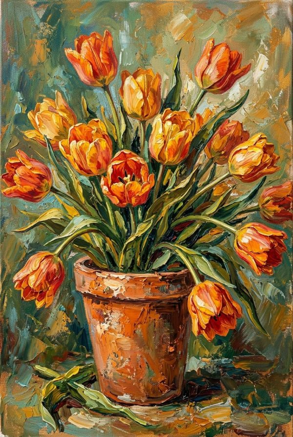
Tulipani arancioni nel vaso di terracottaCollezione Studioai Bouquet di primaveraCollezione Studioai
Bouquet di primaveraCollezione Studioai Ciliegie e fichiCollezione Studioai
Ciliegie e fichiCollezione Studioai Limoni nel piatto bluCollezione Studioai
Limoni nel piatto bluCollezione Studioai Anguria e uvaCollezione Studioai
Anguria e uvaCollezione Studioai Pere e melograniCollezione Studioai
Pere e melograniCollezione Studioai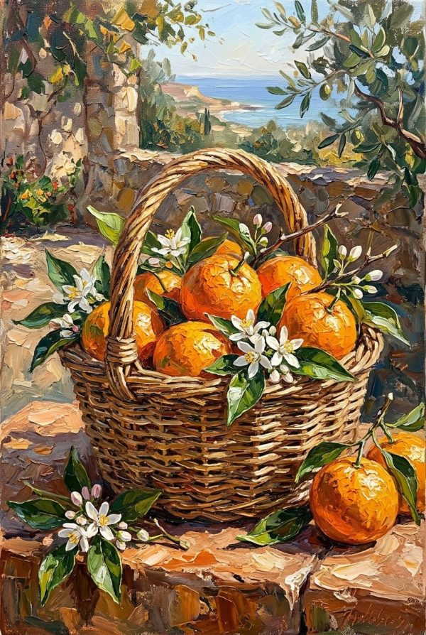
Cesto di aranceCollezione Studioai Caffè, cornetto e fragoleCollezione Studioai
Caffè, cornetto e fragoleCollezione Studioai Mele verdi e bollitore di rameCollezione Studioai
Mele verdi e bollitore di rameCollezione Studioai Frutta tropicaleCollezione Studioai
Frutta tropicaleCollezione Studioai Limonata alla mentaCollezione Studioai
Limonata alla mentaCollezione Studioai Avocado, limoni e margheriteCollezione Studioai
Avocado, limoni e margheriteCollezione Studioai Onde turchesiCollezione StudioaiFaro sugli scogliCollezione Studioai
Onde turchesiCollezione StudioaiFaro sugli scogliCollezione Studioai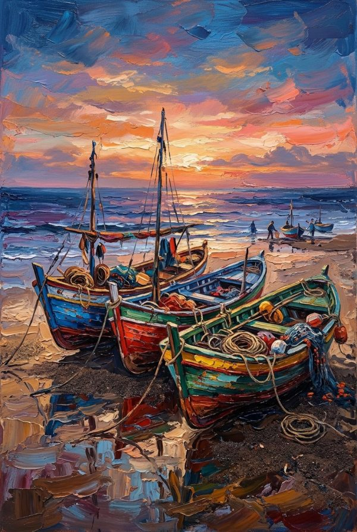
Barche da pesca all'albaCollezione Studioai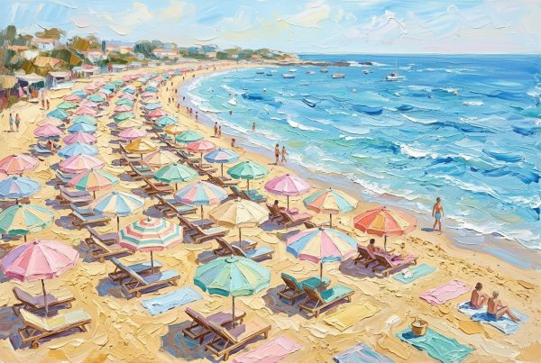
Ombrelloni in spiaggiaCollezione Studioai Laguna tropicaleCollezione Studioai
Laguna tropicaleCollezione Studioai Gabbiani al tramontoCollezione Studioai
Gabbiani al tramontoCollezione Studioai Passerella tra le duneCollezione Studioai
Passerella tra le duneCollezione Studioai Costa rocciosa sul mare smeraldoCollezione Studioai
Costa rocciosa sul mare smeraldoCollezione Studioai Barca a vela sul mare bluCollezione Studioai
Barca a vela sul mare bluCollezione Studioai Bassa marea al tramontoCollezione Studioai
Bassa marea al tramontoCollezione Studioai Strada tra colline fioriteCollezione Studioai
Strada tra colline fioriteCollezione Studioai Pini nella nebbiaCollezione Studioai
Pini nella nebbiaCollezione Studioai Lago tra montagne innevateCollezione Studioai
Lago tra montagne innevateCollezione Studioai Vigneto in autunnoCollezione Studioai
Vigneto in autunnoCollezione Studioai Campo di grano sotto la tempestaCollezione Studioai
Campo di grano sotto la tempestaCollezione Studioai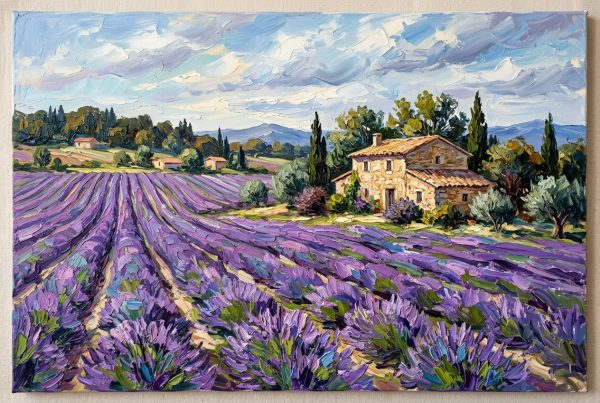
Campo di lavandaCollezione StudioaiBetulle in autunnoCollezione Studioai Cascata nel boscoCollezione Studioai
Cascata nel boscoCollezione Studioai Fiume con saliciCollezione Studioai
Fiume con saliciCollezione Studioai Pampa al tramontoCollezione Studioai
Pampa al tramontoCollezione Studioai Tram giallo a LisbonaCollezione Studioai
Tram giallo a LisbonaCollezione Studioai Tetti di Parigi al calar della seraCollezione Studioai
Tetti di Parigi al calar della seraCollezione Studioai Canale di Venezia con gondoleCollezione Studioai
Canale di Venezia con gondoleCollezione Studioai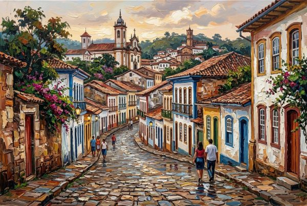
Case colonialiCollezione Studioai Mercato dei fiori sotto la pioggiaCollezione StudioaiVillaggio grecoCollezione Studioai
Mercato dei fiori sotto la pioggiaCollezione StudioaiVillaggio grecoCollezione Studioai Tromba a pennellate libereCollezione Studioai
Tromba a pennellate libereCollezione Studioai N. 163 · Gauchos a cavallo
N. 163 · Gauchos a cavallo N. 162 · Viale fiorito
N. 162 · Viale fiorito N. 161 · Tramonto sul lago
N. 161 · Tramonto sul lago N. 159 · Donna e cane in riva al mare
N. 159 · Donna e cane in riva al mare N. 157 · Narcisi
N. 157 · Narcisi N. 156 · Trittico: tramonto sulla spiaggia
N. 156 · Trittico: tramonto sulla spiaggia N. 155 · Bouquet di margherite
N. 155 · Bouquet di margherite N. 154 · Bicicletta con fiori
N. 154 · Bicicletta con fiori N. 153 · Mare e scogliera
N. 153 · Mare e scogliera N. 152 · Natura morta in blu
N. 152 · Natura morta in blu N. 150 · Bouquet lilla e bluN. 148 · Cavaliere con il lazo
N. 150 · Bouquet lilla e bluN. 148 · Cavaliere con il lazo N. 147 · Cascata di fiori gialli
N. 147 · Cascata di fiori gialli N. 145 · Tramonto sul Guaíba
N. 145 · Tramonto sul Guaíba N. 141 · Aglio e limone
N. 141 · Aglio e limone N. 140 · Via antica al calar della sera
N. 140 · Via antica al calar della sera N. 139 · Fiori nell'atelierN. 136 · Fiori bianchi nella notte
N. 139 · Fiori nell'atelierN. 136 · Fiori bianchi nella notte N. 135 · Gaucho a cavallo
N. 135 · Gaucho a cavallo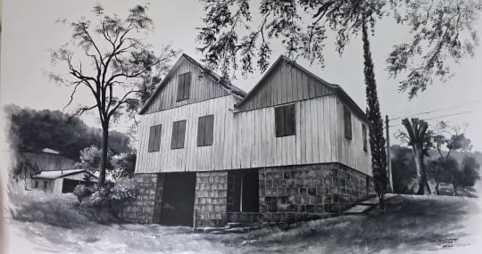
N. 133 · Antica villa a grafite N. 131 · Tulipani
N. 131 · Tulipani N. 130 · Spiaggia con palme da cocco
N. 130 · Spiaggia con palme da cocco N. 128 · Fiori a rilievo nel vaso
N. 128 · Fiori a rilievo nel vaso N. 126 · Casa verde con giardino
N. 126 · Casa verde con giardino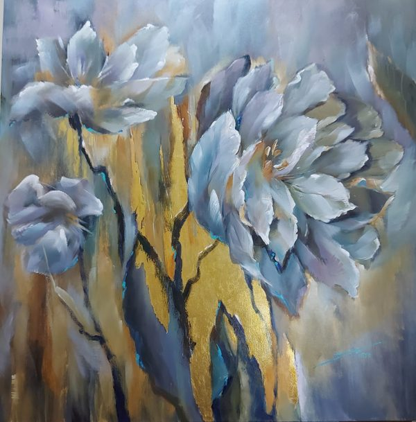
N. 123 · Fiori blu e oro N. 122 · Fiori nel vaso di vetro
N. 122 · Fiori nel vaso di vetro N. 121 · Banane e fiori rosa
N. 121 · Banane e fiori rosa N. 120 · Giardino tropicale
N. 120 · Giardino tropicale N. 119 · Papaya e fiori
N. 119 · Papaya e fiori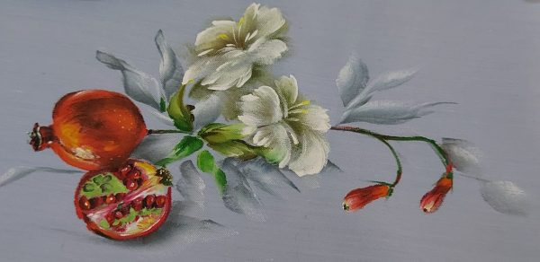
N. 118 · Melograno e fiori bianchi N. 117 · Fichi e fiori
N. 117 · Fichi e fiori N. 116 · Kiwi e uccellino
N. 116 · Kiwi e uccellino N. 115 · Anacardio e fiori
N. 115 · Anacardio e fiori N. 114 · Prugne e foglie
N. 114 · Prugne e foglie N. 112 · Mela verde e fiori
N. 112 · Mela verde e fiori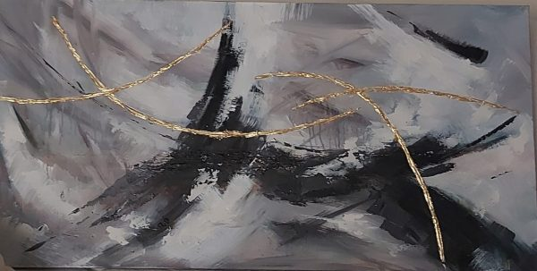
N. 111 · Astratto in nero e oro N. 110 · Uva e margherite
N. 110 · Uva e margherite N. 109 · Pescatore sulla spiaggia
N. 109 · Pescatore sulla spiaggia N. 108 · Cocchi e fiori
N. 108 · Cocchi e fiori N. 107 · Mercato nella via antica
N. 107 · Mercato nella via antica N. 106 · Via fiorita con tende
N. 106 · Via fiorita con tende N. 104 · Bufalo e leone
N. 104 · Bufalo e leone N. 101 · Fiori ad acquerello
N. 101 · Fiori ad acquerello N. 100 · Esplosione di fiori
N. 100 · Esplosione di fiori N. 97 · Porta blu con rampicante
N. 97 · Porta blu con rampicante N. 96 · Fiori al vento
N. 96 · Fiori al vento N. 95 · Rametto di fiori leggero
N. 95 · Rametto di fiori leggero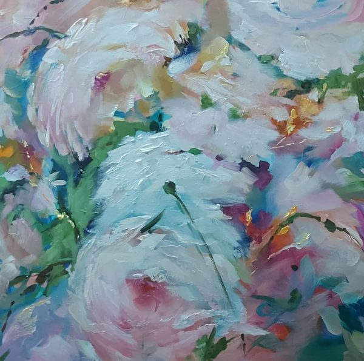
N. 94 · Peonie bianche N. 92 · Fiori lilla a rilievo
N. 92 · Fiori lilla a rilievo N. 91 · Spiaggia con palloncino
N. 91 · Spiaggia con palloncino N. 90 · Pescatori sulla barca
N. 90 · Pescatori sulla barca N. 89 · Lago blu all'alba
N. 89 · Lago blu all'alba N. 87 · Vaso blu con fiori
N. 87 · Vaso blu con fiori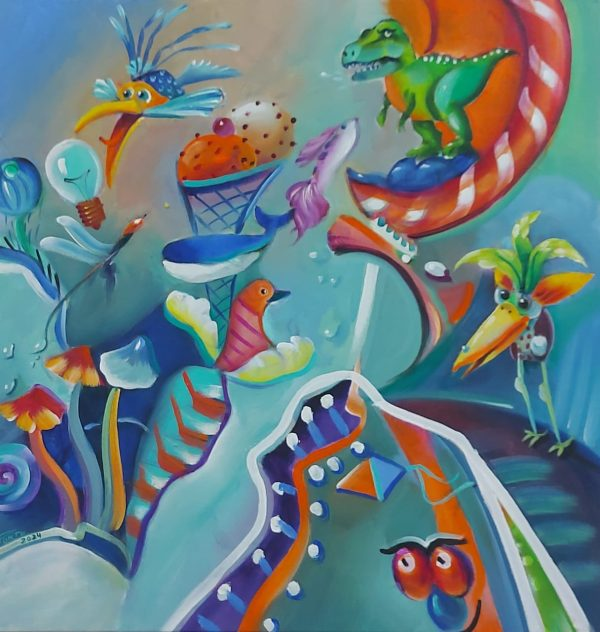
N. 86 · Fantasia di colori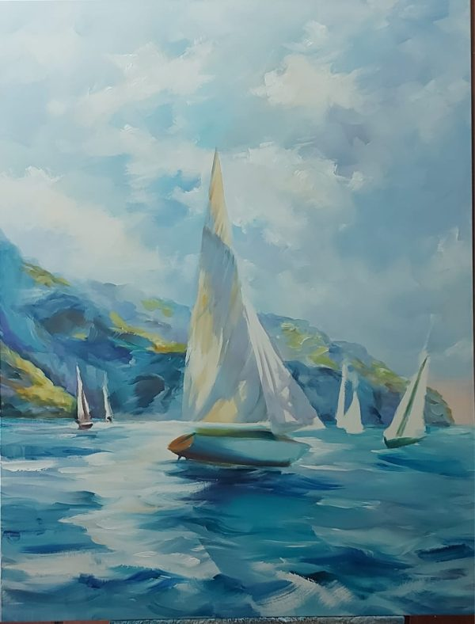
N. 85 · Barche a vela nella baiaN. 82 · Orchidee N. 80 · Fiori in trasparenza
N. 80 · Fiori in trasparenza N. 79 · Mandriani a cavallo al tramonto
N. 79 · Mandriani a cavallo al tramonto N. 77 · Padre e figlio per strada di notte
N. 77 · Padre e figlio per strada di notte N. 72 · Edificio di vetro e giardino
N. 72 · Edificio di vetro e giardino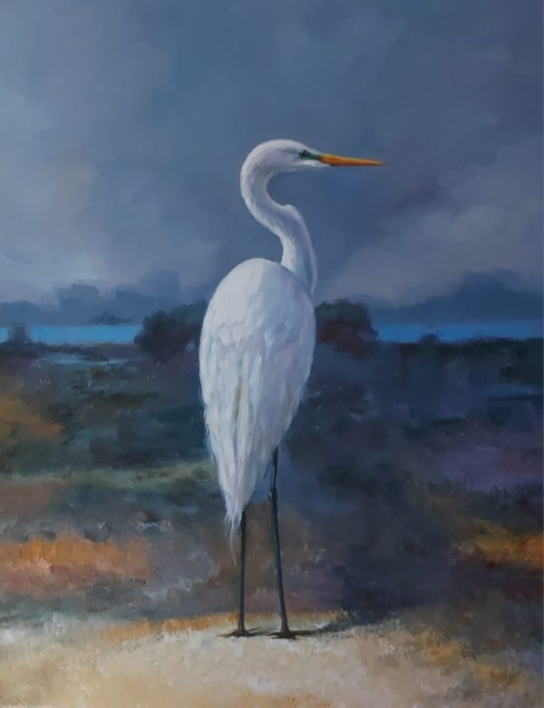
N. 70 · Airone al tramonto N. 69 · Notte nel cortile coloniale
N. 69 · Notte nel cortile coloniale N. 67 · Ritratto di carlino
N. 67 · Ritratto di carlino N. 66 · Vaso di fiori in blu
N. 66 · Vaso di fiori in blu N. 65 · Barca a vela al tramonto
N. 65 · Barca a vela al tramonto N. 64 · Casa di legno in autunno
N. 64 · Casa di legno in autunno N. 56 · Mulino in campagna
N. 56 · Mulino in campagna N. 55 · Passeggiata sotto la pioggia al tramonto
N. 55 · Passeggiata sotto la pioggia al tramonto N. 54 · Ritratto di cagnolino
N. 54 · Ritratto di cagnolino N. 52 · Astratto in rosso e oro
N. 52 · Astratto in rosso e oro N. 51 · Macinacaffè e violette
N. 51 · Macinacaffè e violette N. 50 · Notte di pioggia a Parigi
N. 50 · Notte di pioggia a Parigi N. 49 · Cappella in campagna
N. 49 · Cappella in campagna N. 48 · Gatta con corona di fiori
N. 48 · Gatta con corona di fiori N. 47 · Astratto in blu e ambra
N. 47 · Astratto in blu e ambra N. 46 · Banane e fiori lilla
N. 46 · Banane e fiori lilla N. 45 · Tramonto sulla città
N. 45 · Tramonto sulla città N. 44 · Bouquet colorato a rilievo
N. 44 · Bouquet colorato a rilievo N. 32 · Astratto in rosso
N. 32 · Astratto in rosso N. 31 · Astratto in lilla e oro
N. 31 · Astratto in lilla e oro N. 27 · Uccello su fondo dorato
N. 27 · Uccello su fondo dorato N. 26 · Cane dal pelo nero
N. 26 · Cane dal pelo nero N. 22 · Sciatori sulla neve
N. 22 · Sciatori sulla neve N. 21 · Luna piena sulle rocce
N. 21 · Luna piena sulle rocce N. 20 · Canale di Venezia
N. 20 · Canale di Venezia N. 19 · Casa gialla con giardino
N. 19 · Casa gialla con giardino N. 18 · Fiori di primavera, dettaglio
N. 18 · Fiori di primavera, dettaglio N. 17 · Vaso verde con fiori blu
N. 17 · Vaso verde con fiori blu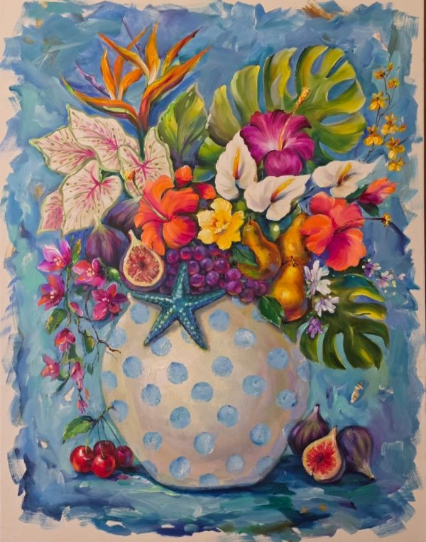
N. 16 · Vaso con fiori tropicali N. 15 · Fiori di primavera in foglia d'oro
N. 15 · Fiori di primavera in foglia d'oro N. 14 · Ombrello giallo
N. 14 · Ombrello giallo N. 13 · Tram e bicicletta sotto la pioggia
N. 13 · Tram e bicicletta sotto la pioggia N. 12 · Donna in rosso nella via antica
N. 12 · Donna in rosso nella via antica N. 11 · Mercato dei fiori
N. 11 · Mercato dei fiori N. 4 · Cane dagli occhi azzurri
N. 4 · Cane dagli occhi azzurri N. 3 · Cavallo con le rediniN. 2 · Fiori arancioni in riva al mare
N. 3 · Cavallo con le rediniN. 2 · Fiori arancioni in riva al mare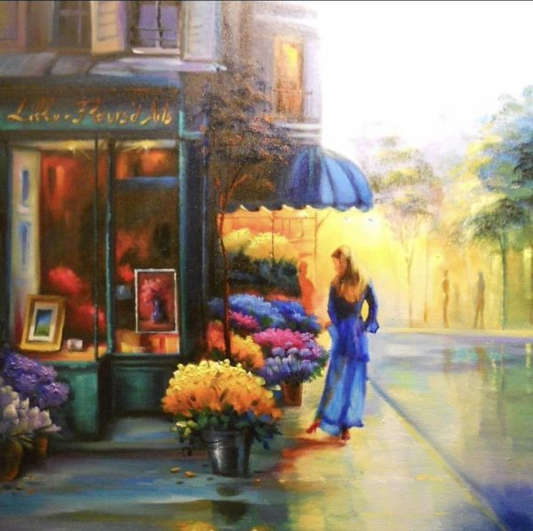
N. 1 · Donna con l'ombrello dal fioraioCiclista nella via fioritaNon trovi quello che cerchi? Silvia dipinge partendo dalla tua foto o dalla tua idea.
Ordina con WhatsApp Scrivi un'e-mail a Silvia© 2026 Silvia Porto — Arti figurative · Porto Alegre, RSCommissioni · WhatsApp (51) 99283-8195 · silviabeust1@gmail.comSviluppato da Diego Kasper - +Quadri